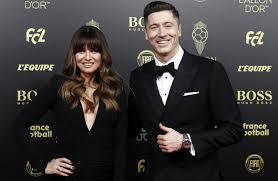

Robert Lewandowski pięciokrotnie (dotychczas) znalazł się na liście nominowanych do tej nagrody – w 2013, 2015, 2016, 2017 i 2019 roku. Jego najwyższą pozycją było 4. miejsce z 2015 roku, kiedy wyprzedzili go jedynie Lionel Messi, Cristiano Ronaldo i Neymar. W 2016 polski napastnik sięgnął z Bayernem Monachium po mistrzostwo Niemiec, Puchar Niemiec i Superpuchar Niemiec, zdobywając przy tym 46 bramek we wszystkich rozgrywkach, a także dotarł z reprezentacją Polski do ćwierćfinału Mistrzostw Europy we Francji. Mimo tego zajął odległe 16. miejsce w plebiscycie. Po ogłoszeniu wyniku Robert Lewandowski pozwolił sobie na komentarz w stosunku do światowego medium. Na swoim profilu na Twitterze Polak zamieścił post w języku francuskim: „le cabaret” (pol. kabaret), który odbił się szerokim echem w mediach. W odpowiedzi francuski dziennik „L’Équipe” wypomniał Polakowi na swoich łamach zdobycie tylko jednego gola podczas finałów minionych mistrzostw Europy. W 2018 Lewandowski został pominięty na liście 30 nominowanych do nagrody. Decyzję dziennikarzy tłumaczono niezadowalającą postawą reprezentacji Polski na mistrzostwach świata i odpadnięciem z turnieju już po fazie grupowej. W 2019 Lewandowski przybył na galę Złotej Piłki „France Football” jako strzelec 52 bramek w 55 meczach. Spekulacje odnośnie pozycji polskiego napastnika podsycił przeciek medialny, dotyczący układu miejsc na widowni paryskiego teatru Châtelet, który zdradził, że podczas ceremonii Lewandowski zasiądzie obok Lionela Messiego i Virgila van Dijka, wymienianych jako faworytów do miejsc 1–2. Ostatecznie piłkarz Bayernu zajął 8. miejsce, co spotkało się z rozżaleniem m.in. polskich i niemieckich mediów, a także kibiców. Pozycja Lewandowskiego po raz kolejny wywołała medialną dyskusję na temat wpływu popularności, rozpoznawalności i globalnej pozycji marketingowej piłkarzy na ich wyniki w tego rodzaju plebiscytach. Sam zainteresowany wspomniał, że traktuje wyniki plebiscytu z „przymrużeniem oka”. Polskie media zgodnie określały status Lewandowskiego w zestawieniach „France Football” jako „niedocenianego”. W czerwcu 2020 serwis football365.com umieścił go na 9. miejscu w rankingu najbardziej niedocenianych piłkarzy. Przez ekspertów i bukmacherów wymieniany był jako faworyt do zdobycia Złotej Piłki za rok 2020[361], której ze względu na pandemię COVID-19 nie przyznano po raz pierwszy w historii plebiscytu. W grudniu 2020, po zdobyciu tytułów Piłkarza Roku UEFA, a następnie Piłkarza Roku FIFA, Robert Lewandowski udzielił wywiadu magazynowi „France Football”. Polak znalazł się także na okładce francuskiego tygodnika, prezentując na zdjęciu trofea (drużynowe i indywidualne) wywalczone w mijającym wówczas roku.